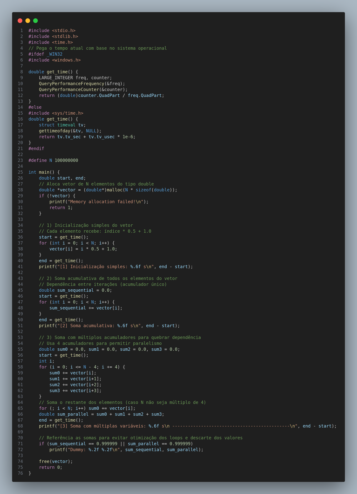

Investigando Paralelismo ao Nível de Instrução (ILP) em C
🎯 Objetivo
Esta atividade tem como objetivo investigar os efeitos do
paralelismo ao nível de instrução (ILP) em programas C,
analisando como dependências entre iterações afetam o desempenho dos laços
sob diferentes níveis de otimização do compilador.
🧠 Fundamentos do Paralelismo ao Nível de Instrução (ILP)
🔍 O que é ILP?
O Instruction-Level Parallelism (ILP) é uma forma de paralelismo onde múltiplas instruções são executadas simultaneamente dentro de um único processador. Diferentemente do paralelismo explícito (como threads ou processos), o ILP explora o paralelismo implícito no código sequencial, permitindo que o processador execute várias operações ao mesmo tempo, desde que não haja conflitos de dependências.
🏗️ Arquiteturas que Suportam ILP
📋 Processadores Superescalares
- Múltiplas Unidades Funcionais: ALUs, FPUs, unidades de load/store independentes
- Pipeline Profundo: Divisão da execução de instruções em estágios paralelos
- Execução Fora de Ordem: Instruções podem ser executadas em ordem diferente da programada
- Especulação de Branch: Predição de desvios para manter o pipeline ocupado
� Processadores VLIW (Very Long Instruction Word)
- Compilador Responsável: O compilador determina quais instruções podem ser paralelas
- Instruções Longas: Cada instrução contém múltiplas operações independentes
- Sem Hardware Complexo: Menor complexidade de hardware, maior responsabilidade do compilador
⚡ Tipos de Dependências que Limitam ILP
🔗 Dependências de Dados (Data Dependencies)
RAW (Read After Write) - Verdadeira Dependência:
A = B + C // Instrução 1
D = A * 2 // Instrução 2 depende do resultado de 1
WAR (Write After Read) - Anti-dependência:
D = A + B // Instrução 1 lê A
A = C + E // Instrução 2 escreve em A
WAW (Write After Write) - Dependência de Saída:
A = B + C // Instrução 1 escreve em A
A = D + E // Instrução 2 também escreve em A
🚀 Técnicas para Maximizar ILP
🔄 Loop Unrolling (Desenrolamento de Loops)
Antes (Dependência Entre Iterações):
for (i = 0; i < N; i++) {
sum += array[i];
}
Depois (Múltiplos Acumuladores):
for (i = 0; i < N-3; i += 4) {
sum1 += array[i];
sum2 += array[i+1];
sum3 += array[i+2];
sum4 += array[i+3];
}
📊 Vetorização SIMD
Single Instruction, Multiple Data: Uma única instrução opera sobre múltiplos elementos de dados simultaneamente. Exemplos incluem instruções SSE, AVX em processadores x86.
Vetorização Automática pelo Compilador:
// Código C original
for (i = 0; i < N; i++) {
c[i] = a[i] + b[i];
}
// Pode ser otimizado para (conceitualmente):
// Processa 4 elementos por vez com instruções SIMD
🎯 Instruction Scheduling
O compilador reordena instruções para minimizar stalls do pipeline, colocando instruções independentes entre operações que causam dependências, maximizando o uso das unidades funcionais.
�📚 Teoria Aplicada
O paralelismo ao nível de instrução (ILP) refere-se à
capacidade dos processadores modernos de executar múltiplas instruções
simultaneamente, desde que não haja dependências de dados entre elas. O
compilador pode explorar ILP reordenando instruções e utilizando
recursos internos do processador, mas dependências no código podem
limitar esse paralelismo.
🧪 Experimentos Implementados
Nesta atividade, três laços são implementados para ilustrar diferentes
cenários de dependência:
1️⃣ Inicialização de Vetor (Sem Dependências)
for (long i = 0; i < N; i++) {
vector[i] = i * 0.5 + 1.0;
}
Características:
- Cada elemento do vetor é inicializado de forma independente
- Não há dependência entre iterações
- O compilador pode paralelizar e otimizar facilmente este loop
- Permite vetorização SIMD eficiente
Gargalo: Limitado pela largura de banda da memória
(memory bandwidth) para escrita, especialmente em vetores grandes.
2️⃣ Soma Acumulativa (Com Dependência)
double sum_sequential = 0.0;
for (long i = 0; i < N; i++) {
sum_sequential += vector[i];
}
Características:
-
Os elementos do vetor são somados sequencialmente em uma única
variável acumuladora
-
Forte dependência entre iterações: cada soma depende
do resultado anterior
- Limita significativamente o paralelismo disponível
- O compilador pode aplicar vetorização limitada
Limitação: A dependência sequencial força
serialização parcial, impedindo paralelismo total mesmo com
otimizações agressivas.
3️⃣ Soma com Múltiplos Acumuladores (Quebra de Dependência)
double sum0 = 0.0, sum1 = 0.0, sum2 = 0.0, sum3 = 0.0;
for (long i = 0; i <= N - 4; i += 4) {
sum0 += vector[i];
sum1 += vector[i+1];
sum2 += vector[i+2];
sum3 += vector[i+3];
}
double sum_parallel = sum0 + sum1 + sum2 + sum3;
Características:
- A soma é dividida entre múltiplas variáveis acumuladoras
- Reduz drasticamente as dependências entre iterações
- Permite ao compilador explorar mais ILP e paralelismo interno
- Facilita vetorização SIMD eficiente
- Aproveita múltiplas unidades funcionais da CPU
Vantagem: Loop unrolling manual combinado com quebra
de dependência permite ao compilador aplicar otimizações agressivas,
resultando em speedups significativos.
📈 Padrões de Performance
🔹 Loop 1 (Inicialização):
Deve apresentar grande ganho de desempenho com
otimizações, pois não há dependências. O compilador pode aplicar
vetorização SIMD agressiva, mas será limitado pela largura de banda da
memória para escritas.
🔹 Loop 2 (Soma Acumulativa):
O ganho com otimização será limitado devido à
dependência sequencial entre as iterações. Mesmo com -O3, o compilador
não pode quebrar completamente a cadeia de dependências.
🔹 Loop 3 (Soma com Múltiplas Variáveis):
A quebra de dependência permite ao compilador aplicar ILP de forma
efetiva, resultando em desempenho superior,
especialmente com otimizações mais agressivas (-O3).
🔢 Dados de Performance Coletados
🔍 Análise dos Resultados
🎯 Observações Principais:
1. Impacto da Quebra de Dependências:
- A soma com múltiplos acumuladores é consistentemente 2x mais rápida que a soma sequencial
- Mesmo sem otimização (-O0), a técnica já demonstra benefícios (0.148s vs 0.318s)
- Com otimização (-O3), a diferença se mantém significativa (0.078s vs 0.157s)
2. Comportamento das Otimizações:
- Inicialização: Melhoria constante de O0 para O3 (1.65x speedup)
- Soma sequencial: Interessante comportamento onde O2 foi ligeiramente mais rápido que O3 (0.152s vs 0.157s)
- Soma paralela: Melhor resposta às otimizações (1.90x speedup), confirmando que código sem dependências se beneficia mais
💡 Conclusões dos Experimentos
Principais Lições Aprendidas:
- Quebra de dependências é fundamental: O uso de múltiplos acumuladores proporcionou ganhos consistentes de 1.73x a 2.15x
- Otimizações do compilador são poderosas: Speedups de até 2.02x apenas mudando flags de compilação
- ILP tem impacto real: Mesmo técnicas simples como múltiplos acumuladores podem dobrar a performance
- Design de código importa: Pequenas mudanças na estrutura do algoritmo têm impacto dramático na performance
